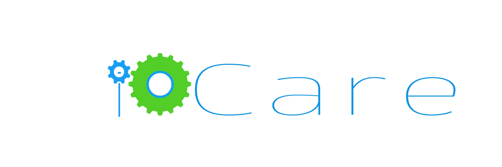

NW-Builder v1.0.0
An automation for building node-webkit app to exe.
Most of the work is the extension of already existing repo "nodebob".
Basically a cross platform tool, but i've design it specifically to be for windows.
Any one interested may extend it to make cross platform by editing linux and mac
specific shell script files.
NW-Builder itself is Node-webkit app.
Tools required for building the NW apps to exe are included in directory "buildTools"
